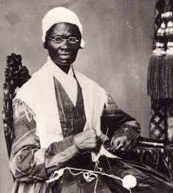

19th Century Reform Movement
"Truth is powerful and it prevails." She was one of the strongest voices for freedom and women's rights in American history.
c. 1797 to 1883
Who She Was

Sojourner Truth, c. 1870
Sojourner Truth was born Isabella Baumfree around 1797 in Ulster County, New York. She was born into slavery and spent her early life working under slave owners. She would later spend the rest of her life speaking out against injustice.
Her first language was Dutch, which reflects the Dutch influence in parts of New York at that time. In 1827, a man named Isaac Van Wagenen helped her gain her freedom. Right away, she took legal action to get her son Peter back, who had been sold into slavery in Alabama against the law. She won the case.
In 1843, she changed her name to Sojourner Truth. She believed she was meant to travel and speak the truth about unfair treatment. She became a traveling preacher and speaker who fought to end slavery and to give women equal rights.
Born Isabella Baumfree around 1797 in Ulster County, New York. Dutch was her first language because of the Dutch history in that part of New York.
Gained her freedom with help from Isaac Van Wagenen. She then won a court case to bring back her son Peter, who had been sold into slavery without legal right.
In 1843, she renamed herself Sojourner Truth and began traveling and speaking. She believed her job was to travel and share the truth about injustice.
She gave speeches for decades beside people like Frederick Douglass and William Lloyd Garrison. She was unique because she had lived through slavery herself.
"I am not going to die, I'm going home like a shooting star."Sojourner Truth
Her Work
Sojourner Truth fought against slavery and for women's rights at the same time. Most people kept these as two separate fights. She knew they were connected.
She worked alongside leaders like Frederick Douglass and William Lloyd Garrison. But Truth brought something no one else could. She had actually lived through slavery, so when she spoke, people listened.
She traveled all over the country giving speeches against slavery. She told her own story, including the hard labor and the pain of being separated from family.
She went to major women's rights meetings and pushed back on the idea that only white, wealthy women deserved equal rights. She said equality had to include all women.
She helped sign up Black soldiers for the Union Army, worked as a nurse and teacher in camps for people who had escaped slavery, and helped groups caring for formerly enslaved people.
In 1864, she was invited to the White House and met President Abraham Lincoln. This was a very powerful moment for a woman who had been born into slavery.
After the Civil War, she pushed the government to help formerly enslaved people move to the western United States so they could build independent lives.
Equal pay for women
Legal and financial rights for women
Political representation
The struggles faced by Black women
Independence for formerly enslaved people
Frederick Douglass, anti-slavery leader
William Lloyd Garrison, anti-slavery activist
Elizabeth Cady Stanton, women's rights organizer
Susan B. Anthony, women's rights leader
Her Words
Sojourner Truth could not read or write, yet she became one of the most powerful speakers of the 1800s. Her words came from real life, and that made them impossible to ignore.
Sojourner Truth, 1864
At the 1851 Women's Rights Convention in Akron, Ohio, some men argued that women were too weak to deserve equal rights. Truth stood up and took apart that idea in just a few minutes.
This convention came after earlier events like the Seneca Falls Convention and the Declaration of Sentiments, which had already started pushing for women's rights. Truth added her powerful voice to make the movement even stronger.
She talked about plowing fields and planting crops her whole life, working just as hard as any man. She spoke about giving birth to 13 children and watching most of them be sold into slavery. Her point was simple. People said women needed to be protected, but no one had ever protected her.
She plowed fields and planted crops equal to any man, showing that women were not weak.
She gave birth to 13 children and saw most of them sold into slavery, a pain that no one could dismiss.
She asked how religion could be used against women when Jesus himself came into the world through a woman.
She said if Eve alone could "turn the world upside down," women working together could help set it right.
After the Civil War, the government was working on giving rights to Black men through the 14th Amendment. Truth had an important question. What about Black women?
She argued that financial freedom was just as important as legal rights. Women worked as hard as men but were paid much less. She called for women to have their own independence, saying they needed "their own money in their pockets." This speech was way ahead of its time.
Her Life
Born into slavery in Ulster County, New York. Dutch was her first language because of the Dutch history in that part of New York.
Escapes slavery and gains freedom with help from Isaac Van Wagenen. She then wins a court case to bring back her son Peter, who had been sold into slavery in Alabama against the law.
Changes her name and begins traveling and preaching. She believed she was meant to travel and speak the truth about injustice and inequality.
Gives her most famous speech at the Women's Rights Convention in Akron, Ohio. She challenges the idea that women are weak and that Black women do not count in the fight for equal rights.
Garrison supports women's rights at a convention even though many people thought his views went too far. He stands beside Truth and other women in the movement.
She is invited to the White House during the Civil War and meets President Lincoln. A historic moment for a woman who had been born into slavery.
She argues that Black women must not be left out of the new rights being given after the Civil War. She warns that leaving women out would just create a new kind of unfair system.
She dies at around age 86 in Battle Creek, Michigan, after decades of fighting for justice. Her impact continued to grow long after her death.
Her Legacy
Sojourner Truth did not just take part in the reform movements of the 1800s. She helped shape them. She made it clear that true equality had to include everyone.
Years of life spent fighting for justice and equality
Years of traveling and speaking out across the country
Major movements she helped push forward, abolition and women's rights
One of her biggest lasting contributions is the idea now called intersectionality. This means that the fight against racism and the fight for women's rights are linked together and have to be dealt with together. Truth was living and arguing this long before anyone had a name for it.
Her speeches made the anti-slavery movement more personal. Her work in women's rights pushed the movement to think about race too. She showed that speaking from personal experience is one of the most powerful things a person can do.
"If women want any rights more than they's got, why don't they just take them, and not be talking about it."Sojourner Truth
Truth worked alongside many important people who helped shape reform movements in the 1800s.
A strong speaker well known for holding an audience and talking about women's rights with great skill.
A writer who created speeches, petitions, and articles that helped shape the women's rights movement.
An organizer who helped keep the women's rights movement going and growing over many years.
An anti-slavery activist who also supported women's rights, even when many people thought his views went too far.